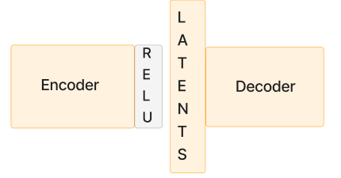

Sparse Autoencoders and Tmux
August 2024, Provo
Sparse Autoencoders
Recently at my work in the PCC lab, my team and I have been working with and training Sparse Autoencoders(SAEs).
As a quick intro as to why we are working with SAEs, my team focuses on improving the interpretability of large language models (LLMs) specifically through the subfield of mechanistic interpretability. Mechanistic interpretability has the goal of breaking down the complexity of an LLM into simple, understandable components. Currently, LLMs are, to a large degree, black boxes. This is because after being pretrained on an internet-scale dataset and instruction-tuned, we are left with a large neural network made up of billions of parameters that is difficult to interpret. Black boxes become dangerous when used in production environments. They can be manipulated to perform malicious actions, reveal sensitive data, or lie sycophantically, especially as they become more intelligent and agentic.
SAEs come into play on the assumption of two hypotheses:
1) The Linear Representation hypothesis proposes that high-level concepts, aka 'features', are represented linearly as directions in a model's representation space.
2) The Superposition hypothesis proposes that neural networks represent more 'features' than they have neurons.
Given these hypotheses, SAEs aim to separate a model's features that are stored in superposition and approximate them using the SAEs dictionary elements referred to as SAE features.
A traditional SAE architecture consists of several components: an encoder with a sparsity constraint, a ReLU activation function, a hidden layer, and a decoder. An SAE is trained on a specific layer of an LLM. Its goal is to reconstruct the activations of that layer. The sparsity constraint aims to disentangle the features from superposition and thus approximate the underlying model's features. Below is a simple diagram of a SAE. Note: sometimes SAE features are referred to as latents. 
Once we can approximate the underlying model's features, we can verify the safety of the model and gain greater control and insight into the model's behavior.
There is a large amount of research left to be done in the field of SAEs, as evaluating the quality of SAEs and their features is still an open problem.
While the theory of SAEs is intellectually fascinating, In my experiment I began to realize that SAEs would take a lot longer to train as they scale up.
Tmux: A Solution for Long-Running Processes
During one of my experiments with a large SAE variant, I found out that the training process was estimated to take about 10 hours (which is long when you typically deal with toy models), and once I initiated it, I quickly realized two problems:
- The terminal in my Docker container could only run this one process, preventing me from executing any other code simultaneously.
- If I closed my IDE, the training would abruptly stop.
Faced with these constraints, I thought I'd have to keep my laptop open and running for the next ten hours! As is common in programming, I assumed that someone had run into this issue before and there is probably a solution.
After speaking with some of my more experienced coworkers, I discovered tmux. This tool allows me to open multiple terminals. I could enter a tmux session, start my training run, and then exit the session. After that, I could either continue working in my container or close my laptop!
As this article is aimed to give a quick overview of tmux, I want to share the general principles of how it works and the commands I use.
Navigating tmux is similar to navigating the general directory structure of a linux system. You can create sessions, join them, leave them, run code in them, list them, and delete them. It's really that simple! Here are the general commands I now use on a regular basis:
$ tmux new -s session_name
$ tmux ls
$ tmux attach -t session_name
$ tmux kill-session -t session_name
# To detach from a session:
# Press Ctrl+b, then press d
To any new, emerging ML researchers, I hope this helps!